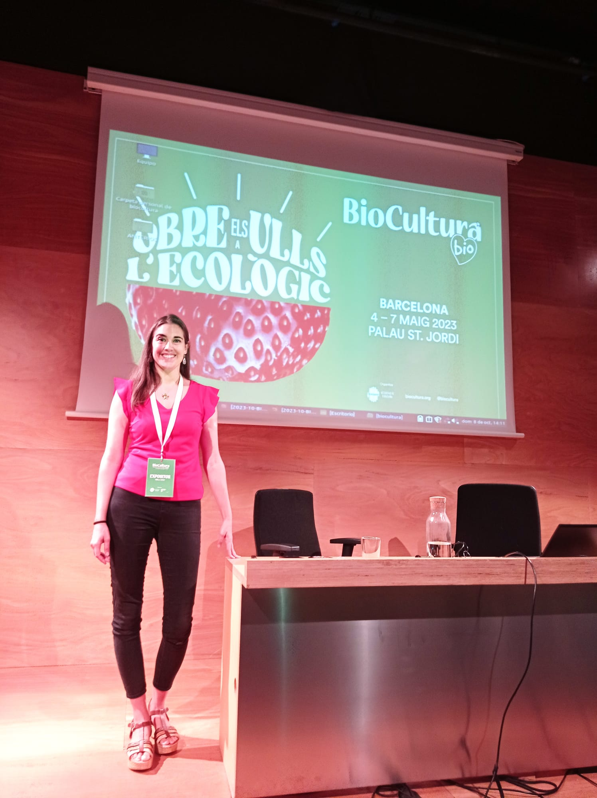

Cómo puedo acompañarte
Tres caminos, un mismo propósito: que recuperes tu equilibrio desde dentro.

Nutrición consciente en Bilbao
Acompañamiento nutricional enfocado en la digestión, la relación con la comida y el bienestar emocional. Ideal si buscas nutricionista en Bilbao para digestiones pesadas, hinchazón abdominal o ansiedad con la comida.
Nutrición integrativa.jpg)
Masaje terapéutico en Bilbao centro
Sesiones de masaje en el centro de Bilbao para liberar tensión física y emocional. Ideal si buscas un masaje en Bilbao que vaya más allá de lo físico, tienes estrés o necesitas reconectar con tu cuerpo.
Masaje terapéutico.jpg)
Terapia energética en Bilbao
Trabajo energético para desbloquear lo que no se ve, pero se siente. Ideal si te sientes bloqueada, repites patrones o buscas un acompañamiento más profundo en el centro de Bilbao.
Energía & bienestar.jpg)